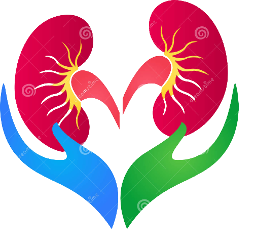

<nav class="navbar fixed-top navbar-expand-lg navbar-light bg-info bg-pb-header-gradient">
  <div class="container-fluid">
    <div class="headm">
      
    </div>
    <a class="navbar-brand">Hospital</a>
    <button class="navbar-toggler p-0" type="button" data-bs-toggle="collapse" data-target="#navbarSupportContent"
      aria-controls="navbarSupportedContent" aria-expanded="false" aria-label="Toggle navigation"
      (click)="collapsed = !this.collapsed">
      <span class="navbar-toggler-icon"></span>
    </button>
    <div class="navbarSupportedContent" [ngClass]="{collapse:collapsed,'navbar-collapse':true}">
      <ul class="navbar-nav ">
        <li class="nav-item">
          <a class="nav-link active" aria-current="page" routerLink="/home">Home</a>
        </li>
        <li class="nav-item">
          <a class="nav-link" routerLink="/about">About</a>
        </li>
        <li class="nav-item">
          <a class="nav-link" routerLink="/contact">Contact</a>
        </li>
      </ul>
    </div>
  </div>
</nav>